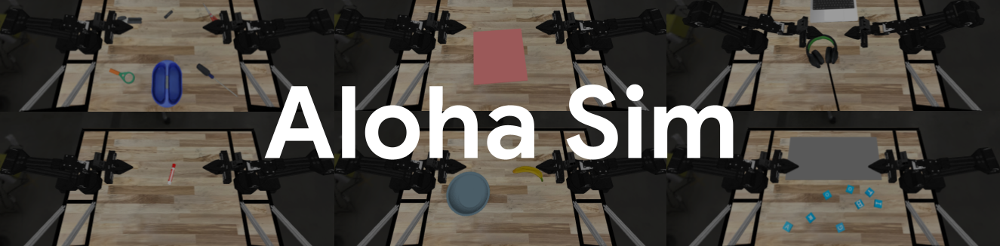
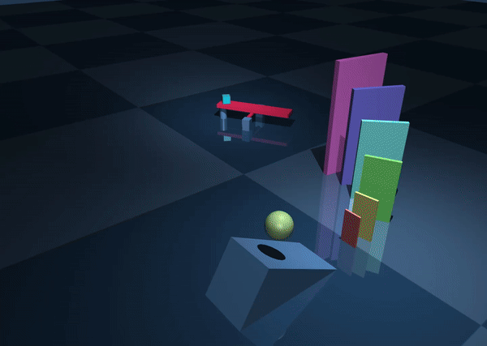
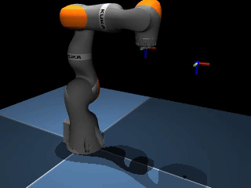
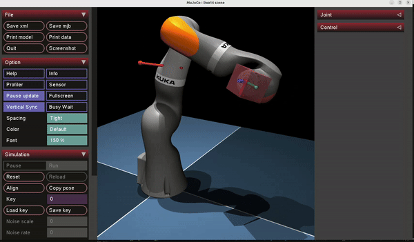
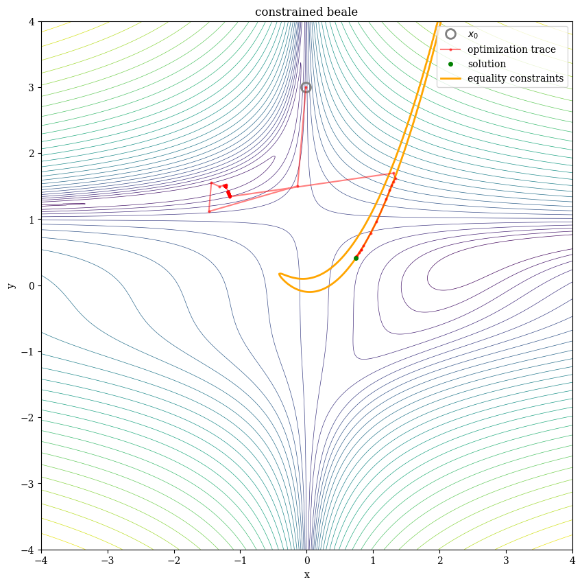
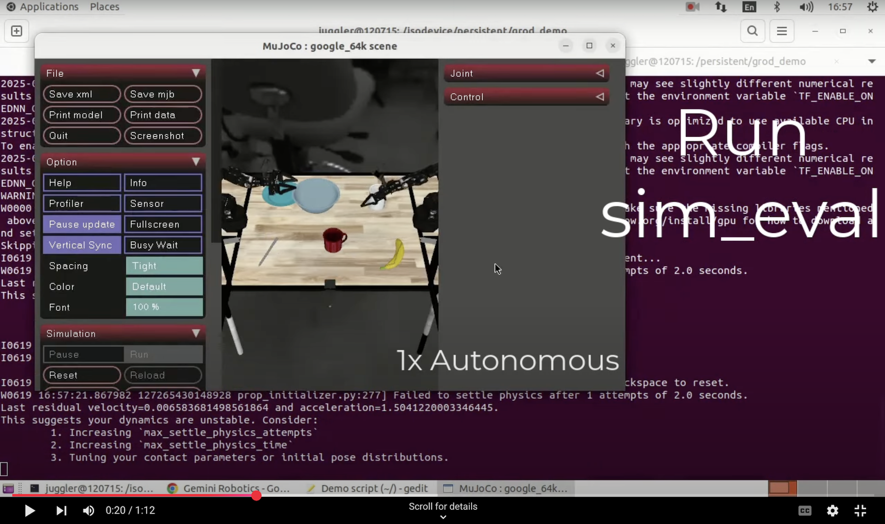

MuJoCo Robotics Tutorials (Windows Edition)

Windows 환경에서 MuJoCo 물리 엔진과 Jupyter Notebook(.ipynb)을 통해 로보틱스의 기초부터 매니퓰레이터 기구학/토크 제어, 비볼록 수치 최적화, 궤적 생성/MPC, 그리고 ALOHA 2 양팔 로봇(Bimanual Manipulation) 시뮬레이션까지 체계적으로 학습할 수 있는 통합 튜토리얼 프로젝트입니다.
학습 로드맵 (Learning Roadmap)
flowchart LR
A["01. MuJoCo 기초\n(MJCF, mjModel/mjData,\n접촉·센서·렌더링)"] --> B["02. 로봇 팔 제어\n(UR5e/Panda/KUKA,\nDiff-IK, Null-space, OSC)"]
B --> C["03. 인터랙티브 모캡 제어\n(3D Viewer 실시간 조작,\n임피던스 순응성 체험)"]
B --> D["04. 비볼록 수치 최적화\n(Gauss-Newton, LM,\nPenalty, Primal-Dual, ALM)"]
D --> E["05. 직접 전사법 & MPC\n(CasADi + IPOPT,\n카트폴 스윙업 실시간 제어)"]
C --> F["06. ALOHA 2 양팔 시뮬레이션\n(Bimanual IK, 4-Camera,\n20종 조작 벤치마크)"]
E --> F
F --> G["07. MuJoCo Playground & MJX\n(jax.vmap 대규모 병렬 시뮬레이션,\nGo1 사족보행, LEAP 다지 로봇 손)"]단계별 커리큘럼 요약
| 단계 | 가이드 문서 | 실습 노트북 (웹 뷰어) | 핵심 주제 | 데모 미리보기 |
|---|---|---|---|---|
| 01 | 01. MuJoCo 기초 가이드 | 01_mujoco_basic.ipynb | MJCF 모델링, mjModel/mjData, 일반화 좌표계(qpos, qvel), 뒤집히는 팽이, 카오스 진자, 접촉력·마찰·센서, 깊이/세그멘테이션 카메라 및 도미노 |
 |
| 02 | 02. 로봇 팔 제어 가이드 | 02_robot_arms.ipynb | UR5e / Franka Panda / KUKA iiwa 14 모델, 미분 역기구학(Diff-IK), 영공간(Null-Space) KKT 최적화, 작업 공간 토크 제어(OSC) |  |
| 03 | 03. 인터랙티브 모캡 가이드 | 03_robot_arm_mocap.ipynb | OperationalSpaceController 모듈화, 3D 리사주(8자) 궤적 추종, mujoco.viewer.launch_passive 실시간 마우스 조작 및 외력 순응성 체험 |
 |
| 04 | 04. 비볼록 최적화 가이드 | 04_optimization.ipynb | 뉴턴법, 레벤버그-마쿼트(LM) 정규화, 가우스-뉴턴(Gauss-Newton), 페널티 방법, 원시-쌍대 KKT 뉴턴-랩슨, 증강 라그랑지안(ALM) |  |
| 05 | 05. 직접 전사법 & MPC 가이드 | 05_direct_transcription_mpc.ipynb | 카트폴(도립진자) 동역학, CasadiMujocoWrap 유한차분 래핑, 직접 전사법(Direct Transcription) 스윙업, Warm-start 실시간 MPC |
- |
| 06 | 06. ALOHA 2 양팔 로봇 가이드 | 06_aloha_bimanual_sim.ipynb | ALOHA 2 양팔(14-Actuator) PBR 모델, 4-카메라 멀티뷰 렌더링, 양팔 미분 역기구학(Bimanual IK), dm_control 기반 20종 일상 조작 태스크 |
 |
| 07 | 07. MuJoCo Playground & MJX 가이드 | 07_mujoco_playground_mjx.ipynb | mujoco.mjx + jax.vmap 대규모 병렬 물리 시뮬레이션, reward.tolerance & MPPI, Unitree Go1 사족보행(조이스틱·외란·도메인 랜덤화), LEAP Hand \(SO(3)\) 인핸드 조작 & 비대칭 액터-크리틱 |
주요 특징
- Windows 원클릭 환경 구축 (
setup_env.bat):uv패키지 매니저를 통해 PC에 Python이나 FFmpeg가 설치되어 있지 않아도 Python 3.11 + 모든 필수 패키지 + 내장 FFmpeg 연결 + Jupyter 커널 등록이 한 번에 완료됩니다. - 단일 통합 아키텍처: 단팔 로봇(UR5e, Panda, KUKA)과 양팔 로봇(ALOHA 2), 3D 일상 물체 에셋(YCB, GSO, EDR)이
assets/아래에 통합되어 있고, 모든 파이썬 제어기·태스크·유틸리티는src/패키지(controllers,tasks,utils)로 일원화되어 있습니다. - 웹 문서 & 노트북 동시 제공:
run_docs.bat을 실행하거나 GitHub Pages를 통해 브라우저에서 이론 요약 가이드와 실행 결과가 포함된 전체.ipynb노트북을 바로 열람할 수 있습니다.